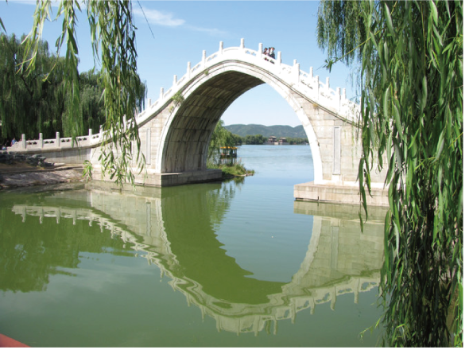
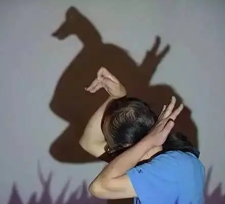

2023年北京中考物理 第2题 解析
2. 如图所示的光现象，由于光的反射形成的是（ ）
A.

桥在水中形成倒影B.

墙上呈现人的影子C. 筷子好像在水面处弯折
D. 放大镜把字放大
【答案】A
【解析】
【详解】A．桥在水中形成倒影，属于平面镜成像现象，是由光的反射形成的，故A符合题意；
B．墙上呈现人的影子，是由于光的直线传播形成的，故B不符合题意；
C．筷子好像在水面处弯折，是由于光的折射形成的，故C不符合题意；
D．放大镜是凸透镜，凸透镜成像成像是由光 折射形成的，故D不符合题意。
折射形成的，故D不符合题意。
故选A。